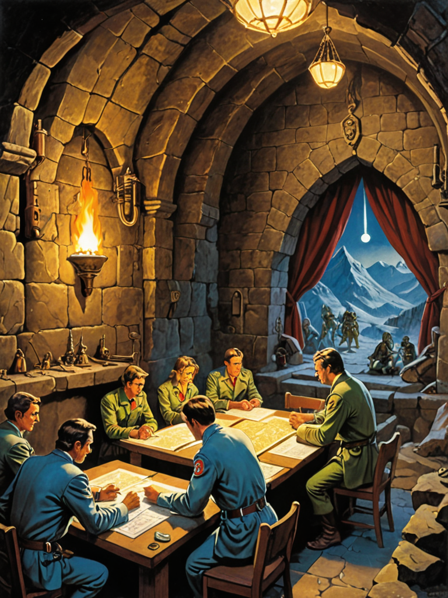
Sovereign Survival Kit sells a zero-cloud AI operating environment where users train personal AI agents on hardware they own and trade formalized expertise (.kassets) via bilateral mesh settlement, certified by SSK's certification service (notary model). Revenue is a progressive network fee on every certified trade. The unit of account — σ (sigma) — is denominated in physics: 1 σ = 1 kWh = 3.6 MJ, converted to local fiat via a published deterministic formula (Regional Energy Cost — total delivered price of electricity) that each device runs locally on user-selected data sources (default: EIA/METI). σ is not a currency, token, or stored-value instrument; it is a reference number — a unit-of-account label applied to the user's existing fiat balance (Doc 05, Doc 22).
The architecture guarantees that the company cannot die at any growth rate above 14,242 active trading users (19,000-22,700 during early-stage fee compression), because the marginal compute cost of each additional user is zero — the user's own hardware runs inference, training, minting, and signing. Core infrastructure is $7,150/month. Operational costs (support, compliance, chain ops) scale linearly but at a fraction of any cloud-hosted competitor (Doc 10 §1). These users are not globally distributed — they are concentrated in two MSAs (Brooklyn and Tokyo) where mesh density supports peer-to-peer discovery. Manhattan's 27,000 people/km² means 14,000 users in a single borough yields >2 encounters/user/day; the Echo mechanism (24-hour store-and-forward .kasset catalogs) fills gaps at lower density so the network feels populated before it actually is (Doc 07 §Mesh Density).
The raise: $3M seed via YC Standard Post-Money SAFE at a $42.86M post-money valuation cap. Seed investors receive 7.0% ownership. The founder retains 93.0%. No option pool — employee compensation is cash salary plus ⚡ grants (Doc 15 §1, Doc 16 §5).
§ 1. What This IsThe Founder
Michael Edgcumbe. Joseph Wharton Scholar (Economics, University of Pennsylvania). MPS, Interactive Telecommunications Program, NYU Tisch School of the Arts. Eagle Scout.
30 years of cumulative work. Every role maps to a product requirement:
This is not a pivot. There is no team to hire for this combination. (Doc 14).
The Twin as Co-Founder
The founder's twin is the same product every user gets — a personal AI agent trained on the founder's own cognitive data, running on his own hardware, managing the same 8 life domains: rest, nourishment, body, shelter, assets, income, bonds, and growth (Doc 03). It continuously rebuilds its understanding of his situation on every turn of conversation. The fact that the founder's daily work includes code review, investor preparation, and competitive analysis means the twin handles those tasks — not because it was special-cased, but because those activities fall within its domain coverage. The founder is user zero. The product works because he uses it every day. (Doc 03 §1).
§ 2. Why This Team, Why Now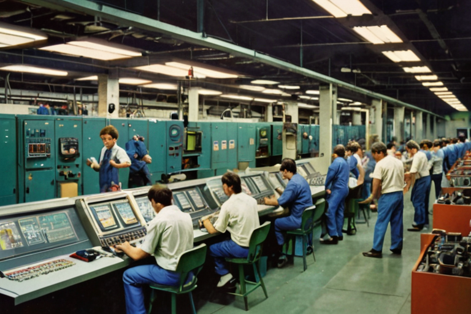
Use of Funds ($3M Seed)
Total: $3,000,000 — fully allocated. No runway buffer as a line item. The 37-month survival runway ($3M / $80K/mo) emerges from the ability to cut discretionary spend (marketing, legal, expansion) if needed — not from a pre-allocated reserve (Doc 11 §1).
Burn Rate
Revenue begins M6. The worst-case growth scenario (k=0.05) produces $215,600 MRR by M12 — above the $167K monthly burn (Cheat Sheet §Scenario 1).
Team (Year 1)
Total Y1 people cost: $749K (salary + $24K agents + $125K benefits) (Doc 11 §7).
§ 3. How The Money Gets SpentFive Communities
The network launches in five distinct communities, each with a specific, articulable reason for adoption:
1. MSM Community (Men Who Have Sex With Men) — The Introduction Economy. The primary growth engine. Grindr sells location data to advertisers and has been used by authoritarian governments to identify and arrest gay men. SSK's introduction exchange is mutual (both consent), contains no identity or location, expires on a timer, and physically cannot be intercepted because no server exists. Trade dynamics: near-zero friction, multiple exchanges per day. Engagement benchmark: Grindr 2024 — 14.2M MAU, 3M+ DAU, 130B chats/year (Cheat Sheet Appendix §Segment Distribution).
2. Brooklyn Creatives — Musicians, Visual Artists, Photographers. The original .kasset minters. Musicians mint tracks that exist only on the mesh. Visual artists attach provenance to physical work. Genesis dinner series (12 people, quarterly) seeds this community directly. Sticker drop network (50 locations across Brooklyn) provides ambient discovery. Trade dynamics: higher-value, lower-frequency. Benchmark: Etsy 2024 10-K seller engagement (Cheat Sheet Appendix §Segment Distribution).
3. JWS @ Wharton — Business and Finance. The founder's alumni network. Joseph Wharton Scholars program provides direct access to business students and alumni who understand unit economics and network effects.
4. ITP @ NYU Tisch — Creative Technology. The founder's graduate program. Interactive Telecommunications Program students build hardware, software, and installations. Natural minters. Workshop format (50 students, near-zero venue cost) produces immediate .kasset creation from existing work.
§ 4. The Beachhead — How We Get The First 1,000 Users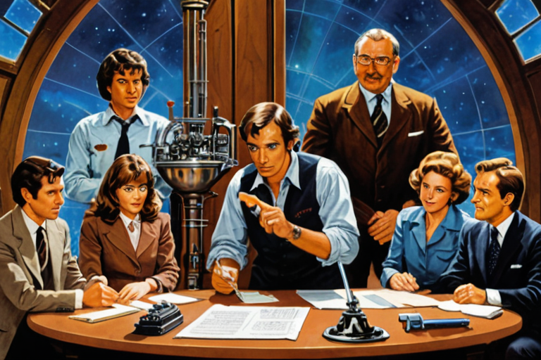
The Formula
Doc 07 defines a bottoms-up acquisition funnel:
N(t+1) = (1+k) × N(t) + C(t)
Where:
· N(t) = cumulative users at month t
· k = viral coefficient (new users per existing user per month)
§ 5. The Growth Model — What Happens After 1,000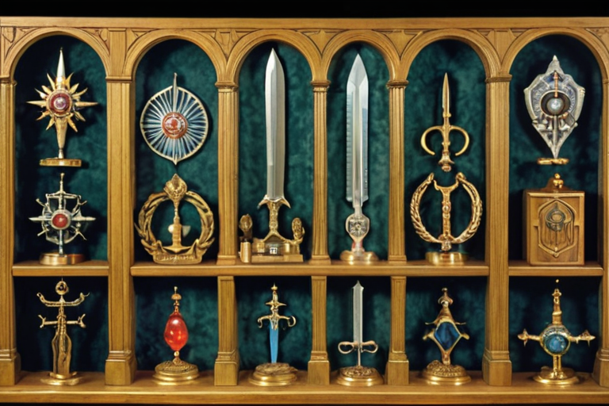
The Progressive Fee
Every .kasset trade incurs a dynamic certification fee from two variables: (1) measured asset rarity/novelty, and (2) buyer's accumulated ⚡ balance. Trades settle bilaterally on mesh; SSK certifies each trade via its certification service (notary model) in exchange for the fee. Three pricing layers: Ramsey (efficient), Rawlsian (progressive), energy-cost proportionality (physical). Range: ~0.5-6%. Weighted average: 2.38% at M12, rising to 3.25% at M36 (Doc 11 §3).
Revenue Streams
Not charged: Subscriptions, distribution channel fees (direct distribution), data monetization (impossible), content moderation headcount (Rule 2 is hardware-enforced).
MSA vs. Non-MSA
SSK sole operator in MSA (NYC, Tokyo, Tier 1) — 100% take. Non-MSA franchise: 70/30. Y1 = 100% MSA. By M36: 60/40 mix, 88% effective take (Doc 11 §4).
§ 6. Revenue Architecture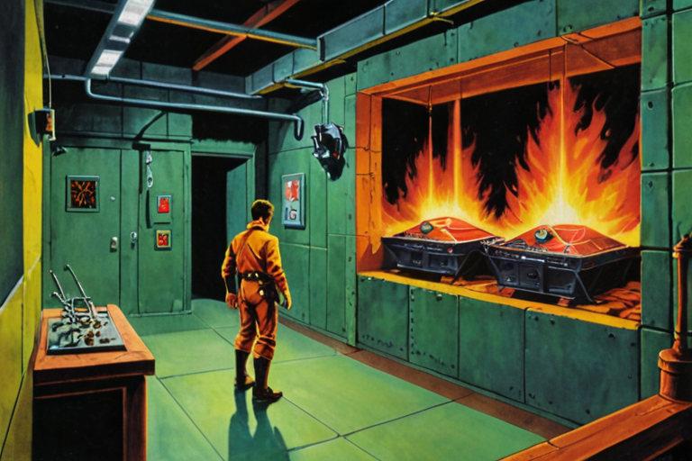
Milestones assume Goldilocks (k=0.3).
Phase 1: M1–M6 — Network Formation (Doc 07 §Combined Phase 1 Timeline)
Total Phase 1 spend: ~$144K + $100K celebrity = ~$244K. 69% of marketing budget. Remaining $111K funds M7–M18 (campus expansion, Ivy League cluster, continued sticker drops) (Doc 07 §Phase 1).
Genesis dinners are quarterly (M1, M4, M7, M10). Sticker drops and gatherings fill the months between. (Doc 07 §Note).
Phase 2: M7–M12 — Network Effects
Sticker racks (~750/mo) + campus expansion (~750/mo) = ~1,500 organized users/month. Organic mesh growth compounds on top. At Goldilocks k=0.3, organic exceeds organized by M8 (Cheat Sheet §Scenario 2).
§ 7. The First 12 Months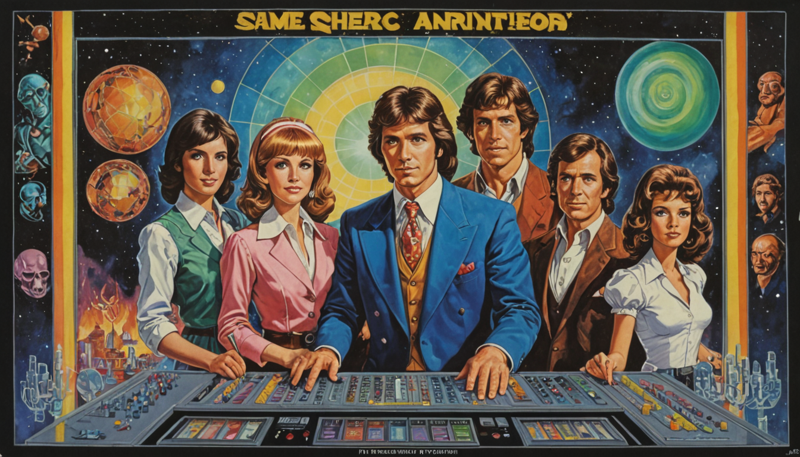
$7,150/mo infra + zero marginal compute cost inverts kill-gate logic:
Death requires three simultaneous failures: (1) < 19K users in 37 months, (2) k = 0, (3) acquisition < 500/mo. Any one false = company survives (Cheat Sheet §Kill Gates).
§ 10. The Kill-Gate Inversion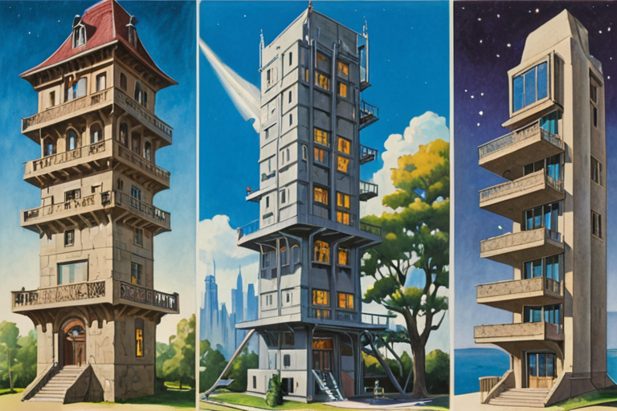
99.6% voting control. 9.3M Class B (20x). Investors: Class A (1x). 10M shares — irrevocable cap. Future rounds from Class B conversion — no new shares created (Doc 16).
2 of 2 voting board seats. Twin serves as charter-level architectural veto oracle — can permanently block any action that compromises zero-egress security or .kasset provenance (Doc 17 §4). Not a board seat (DGCL §141(b)); a charter enforcement mechanism.
No option pool. All employee compensation is cash + spark grants. Zero equity dilution from hiring (Doc 16 §5).
Investor access: Seed investors receive information rights only — no board seat, no observer seat. Series A receives a non-voting observer seat. No investor receives a voting board seat at any stage. If a board seat is a condition of investment, the deal is declined (Doc 17).
Why: The airgap IS the product. Removable airgap = worthless signatures (Doc 17 §3).
You are not betting on a founder. You are betting on an equation.
§ 11. Governance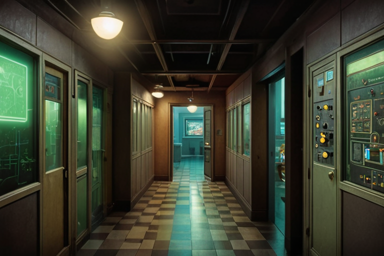
30+ years building at the intersection of Apple-native architecture, spatial computing, and machine learning. Solo architect of the Sovereign Survival Kit codebase (fully audited, 100% test passing). The only person on Earth currently running a local twin trained on their own cognitive data, airgapped, on their own hardware. Eagle Scout.
§ Summary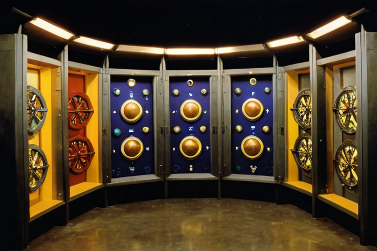
· National Merit Scholar
· Eagle Scout, Boy Scouts of America
· Post-calculus thesis work at NOAA Atmospheric Turbulence and Diffusion Division, Oak Ridge National Laboratory (ORNL), Oak Ridge, TN (1996–1997) — evaluating and building VR environments on a Silicon Graphics Onyx rack
Graduate thesis: "Designing a Natural User Interface" (2011) — applying General Tau Theory (David Lee) to gesture-driven interfaces. First software implementation built as a Processing/Kinect thesis demonstration prototype (Java) during ITP, later re-implemented in C++/Unreal Engine as TauSkeletonVisual. Proposed perception-in-action as the fundamental control mechanism for software, predating Apple Vision Pro's hand tracking by 12 years.
§ Education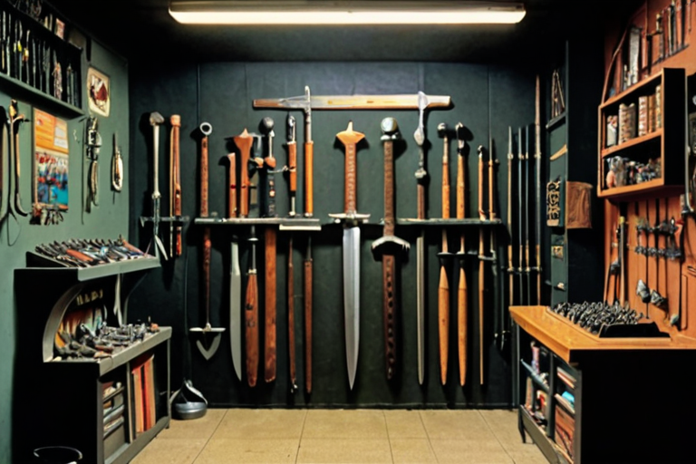
Headline Roles
Complete Chronology
Research & IP
· Graduate thesis (2011): Designed a gestural interface driven by tau-coupling (propriospecific, exterospecific, expropriospecific movement classes). Built a custom skeleton tracking rig to measure joint data relative to itself. The core insight — your perception of your body in motion is the mechanism by which the user interface is controlled — is the intellectual foundation for Sovereign Survival Kit's τ-metric implementation.
· TauSkeletonVisual: General Tau Theory implementation in C++/Unreal Engine (CC-BY-NC-ND 4.0). Defensive IP for Sovereign Survival Kit.
· TGI Sports: Metal + RealityKit pipeline achieving 100% frame synchronization.
§ Full Career History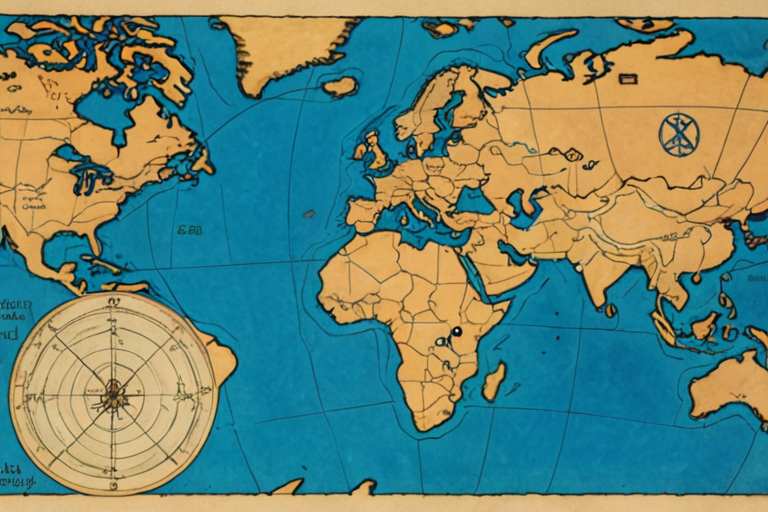
Patent family: Methods for providing interactive audio information for geographic landmarks within 3D panoramic street-level imagery. Filed Aug 27, 2021 (App. 17/458,816). Assigned to Google LLC. Also published as US-11137976-B1, US-20220083309-A1.
Relevance to Sovereign Survival Kit: These patents cover the spatial audio interaction paradigm that directly precedes Sovereign Survival Kit's τ-coupled voice interface — applying interactive audio information to navigable 3D environments. The founder designed the system described in these patents while at Google Maps.
§ Patents (Google-Assigned)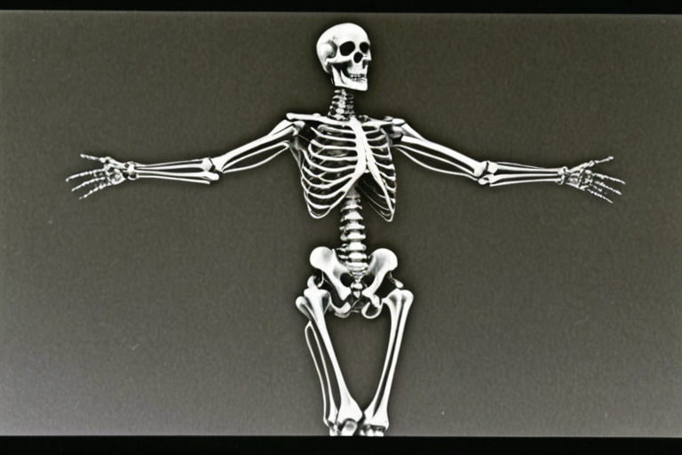
The Sovereign Survival Kit clara-engine codebase is not a prototype. It is production code:
All code runs on a single NVIDIA RTX 3080 Ti Laptop GPU (16 GB VRAM, SM 8.6 Ampere) with strict VRAM phase management. No cloud. No API calls. No egress.
§ Production Codebase (Owned & Audited)